|
|
| crabs text index | photo index |
| Phylum Arthropoda > Subphylum Crustacea > Class Malacostraca > Order Decapoda > Brachyurans > Family Portunidae |
| Red
swimming crab Thalamita spinimana Family Portunidae updated Dec 2019 Where seen? This bright red swimming crab is commonly seen on many of our shores, especially near reefs and coral rubble. It is particularly active at night. It can be quite fierce and give a good pinch to inquisitive fingers. Don't handle crabs! Features: Body width 5-7cm. Body rectangular, the body sides with 5 black-tipped spines, all about equal in size. The eyes are wide apart. Between the eyes are 6 small rounded lobes. Last pair of legs are paddle-shaped often bluish. Body, pincers and walking legs plain bright orange or red, sometimes blue. Some have a chocolate brown body with blue legs. Inner 'elbows' are white. |
 Sisters Island, Dec 03 |
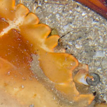 |
 |
 Inner 'elbows' white. Pulau Semakau, Jan 09 |
 Brown crab mating with a red one. Terumbu Pempang Tengah, May 11 |

| What does it eat? Quite a variety of prey it seems. We have seen them eating a snail, a jellyfish, a heart urchin and even another crab. |
 Eating a jellyfish. Pulau Semakau, Dec 04 |
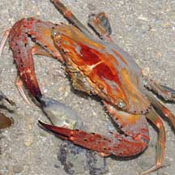 Eating a snail. Sisters Island, Sep 10 |
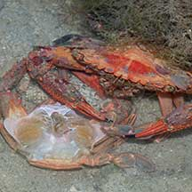 Eating a moult of another Red swimming crab nearby. Terumbu Semakau, Apr 21 Photo shared by Marcus Ng on facebook. |
|
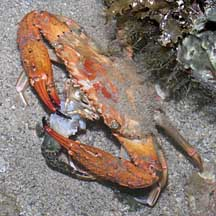 Eating another crab. Terumbu Pempang Tengah, May 11 |
 Eating a heart urchin. Terumbu Pempang Tengah, May 11 |
| Red swimming crabs on Singapore shores |
On wildsingapore
flickr
|
| Other sightings on Singapore shores |
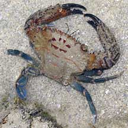 Terumbu Berkas, Jan 10 |
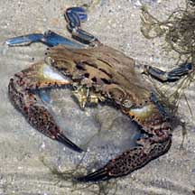 Pulau Sudong, Dec 09 |
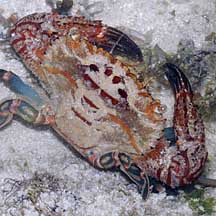 Pulau Salu, Aug 10 |
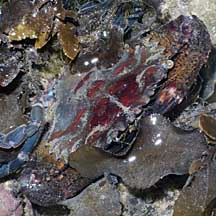 Pulau Senang, Aug 10 |
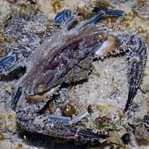 Pulau Biola, May 10 |
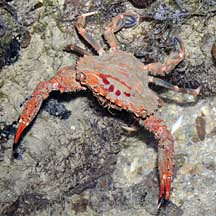 Pulau Pawai, Dec 09 |
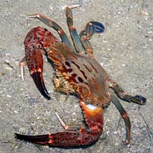 Pulau Sudong, Dec 09 |
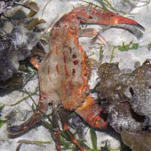 Pulau Senang, Aug 10 |
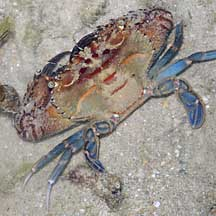 Pulau Pawai, Dec 09 |
| Acknowledgements Grateful thanks to Crabhunter for identification of some of these crabs. Links
|